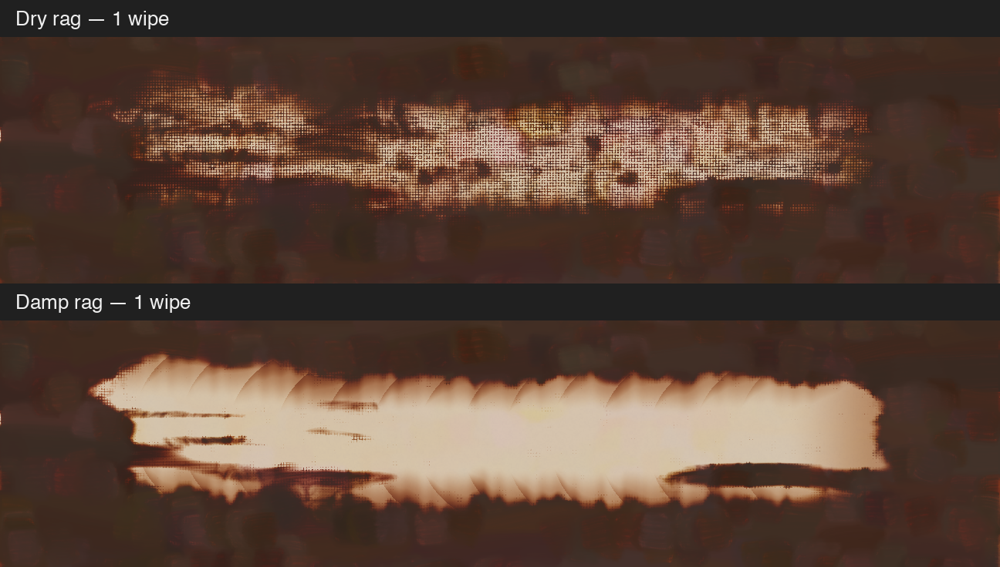
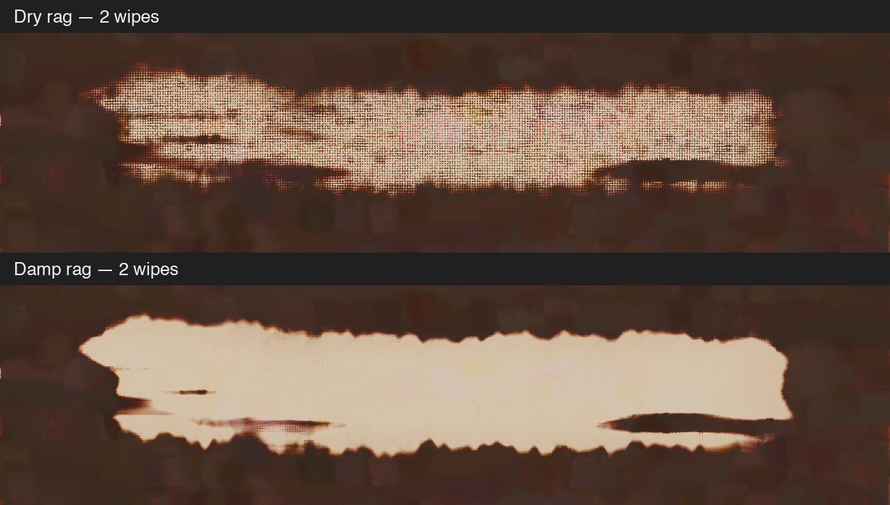

Identical starting paint, path, pressure and seeds. Dry rag has no solvent; damp rag starts with a 0.5 dip. These are visible wet-paint renders. Crops retain native pixels from a 2400-pixel-wide canvas; click each image to inspect the PNG.

The second wipe uses the same rag face without refolding.

Untouched paint · Dry: one wipe · Damp: one wipe · Dry: two wipes · Damp: two wipes